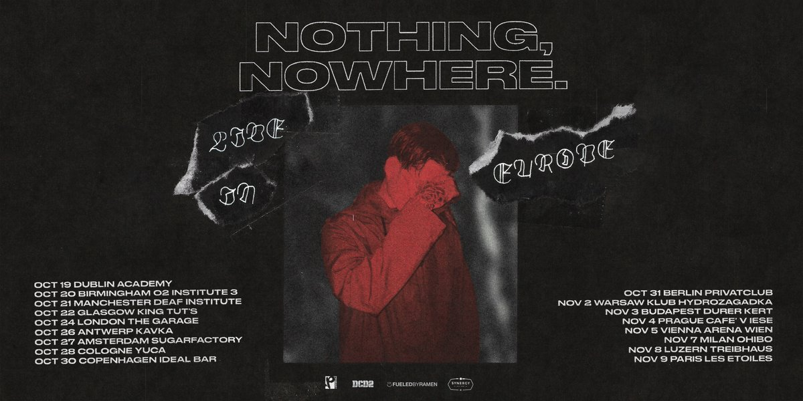
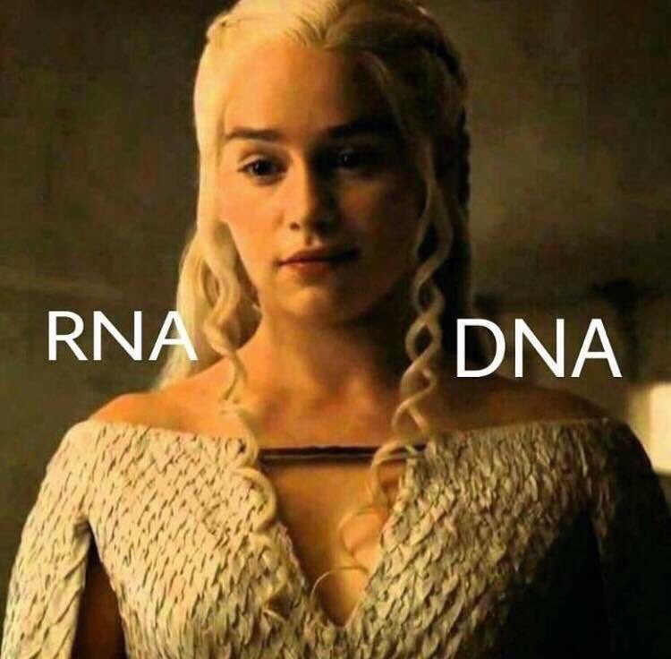
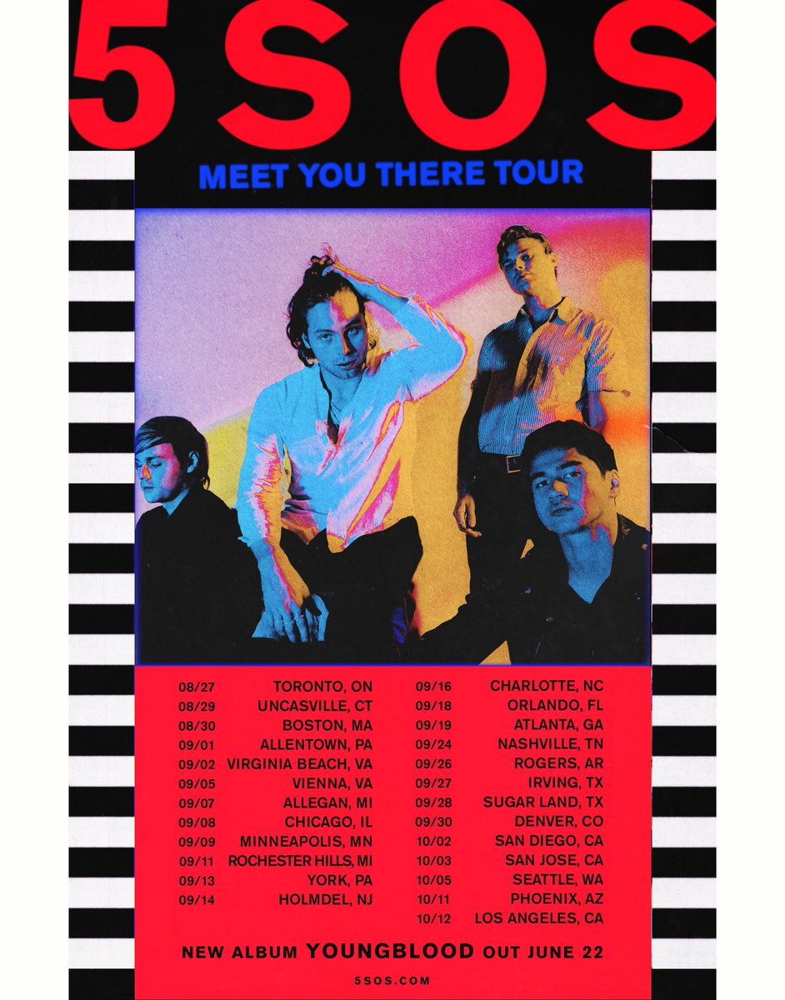
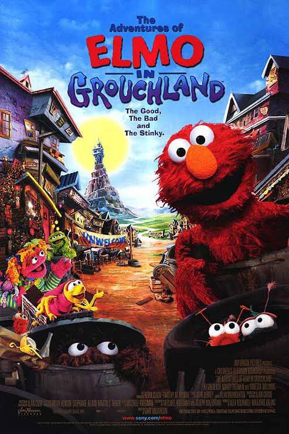
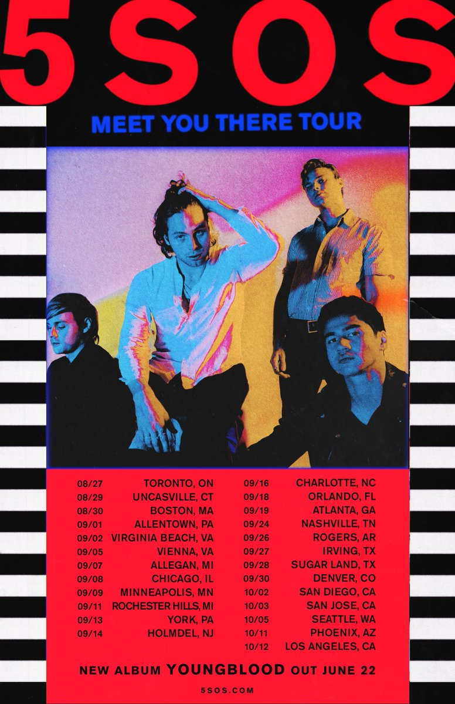
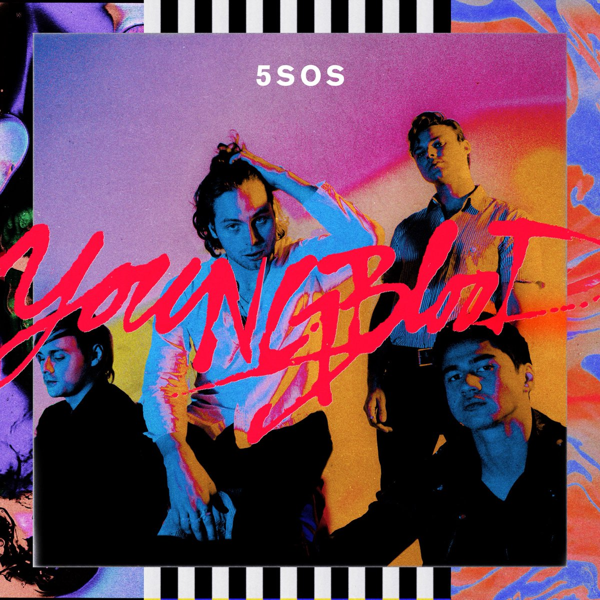
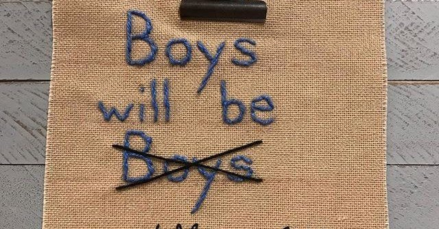

Tweets
-
rutvi Retweeted
i saw this really sage looking frog at the aquarium yesterdaypic.twitter.com/hGKBJoayFO
Thanks. Twitter will use this to make your timeline better. UndoUndo -
Before You Join A Recipe Kit Delivery Service, Read Thishttps://cards.twitter.com/cards/18ce54n71jj/5gcqu …
-
Delhi BJP leader Harish Khurana claims Congress leaders were earlier today seen eating at restaurant in Delhi before sitting on a protest and observing fast at Rajghat over atrocities on Dalits. (In pic, Congress leader AS Lovely)pic.twitter.com/OWsIWmwPKP
Show this threadThanks. Twitter will use this to make your timeline better. UndoUndo -
Calum Hood Retweeted
WE DID IT!!!!
Thanks. Twitter will use this to make your timeline better. UndoUndo -
First Comment to First Collab. Get Your Start on SoundCloud.
-
In case you missed it
-
The
@EnactusMcr team are ready to present at#EnactusUKNationals shortly. Good luck guys!pic.twitter.com/wVgrtlZ805Thanks. Twitter will use this to make your timeline better. UndoUndo -
New blog post for April! Something a bit different- Downing student Irfan shares his experience of his year abroad in France with the Erasmus+ scheme, as part of his law degree here at Cambridge

 http://www.discoverdowning.com/studentblog/year-abroad/ …pic.twitter.com/1Judcs3fKVThanks. Twitter will use this to make your timeline better. UndoUndo
http://www.discoverdowning.com/studentblog/year-abroad/ …pic.twitter.com/1Judcs3fKVThanks. Twitter will use this to make your timeline better. UndoUndo -
What do you mean there's only one IPL match today? WTF does BCCI expect me to do between 4:00-7:30PM? Work?
Thanks. Twitter will use this to make your timeline better. UndoUndo -
Exclusive: As elections near, many older, educated, white voters shift away from Trump's partyhttps://reut.rs/2Jtzdbv
Thanks. Twitter will use this to make your timeline better. UndoUndo -
#DavidTennant did a gender reveal for Greg and Kristina at#SVCC yesterday (video) https://www.instagram.com/p/BhVBB8jHOGT/ pic.twitter.com/XFpk7YavmZThanks. Twitter will use this to make your timeline better. UndoUndo -
Thanks. Twitter will use this to make your timeline better. UndoUndo
-
Thanks. Twitter will use this to make your timeline better. UndoUndo
OK. You won't see these as much. UndoUndo -
-
Steven Christie liked
I finally saw Thor Ragnarok last night and ascended to my truest form, a beam of iridescent rainbow light wielding many swords and screamsinging the yelling part of Immigrant Song
Show this threadThanks. Twitter will use this to make your timeline better. UndoShow fewer likes from Steven ChristieShow fewer Tweets from Kendra 🐷Undo -
Fueled By Ramen Retweeted
good news and bad news - my april show in london is cancelled due to ongoing vocal cord rehabilitation, but i will be back in october to tour europe. all tix are valid for the new london date or you can get refunds from point of purchase. tickets on sale wednesday @ 9 am BSTpic.twitter.com/THQUJmF3iG
Thanks. Twitter will use this to make your timeline better. UndoUndo -
Steven Christie liked
Look around, look around at how lucky we are to be alive right now!
#OlivierAwardspic.twitter.com/JyCtb8JAg3Thanks. Twitter will use this to make your timeline better. UndoShow fewer likes from Steven ChristieShow fewer Tweets from Hamilton West EndUndo -
autotuned nugget liked
welcome to my gender reveal party. my reveal is that gender is a construct. also im not pregnant. i will be keeping your gifts. please leave my home.
Thanks. Twitter will use this to make your timeline better. UndoShow fewer likes from autotuned nuggetShow fewer Tweets from jamie loftusUndo -
dodie liked
doddleoddle will be rebranded to just dodie this year i feel it in my bones
Show this threadThanks. Twitter will use this to make your timeline better. UndoShow fewer likes from dodieShow fewer Tweets from maisieUndo -
GABY
 liked
liked
i regret to inform you that i am the woman of your dreams
Thanks. Twitter will use this to make your timeline better. UndoShow fewer likes from GABY 🏳️🌈Show fewer Tweets from jamie loftusUndo -
Get Free One-Day Delivery, downloadable VAT invoices, Pay by Invoice and more.The
#Amazon you know. For#business.https://cards.twitter.com/cards/18ce54nqycw/5g246 … -
Steven Christie liked
Girls will pre-miss you, im leaving in 6 hours fam why are you sad already?
Thanks. Twitter will use this to make your timeline better. UndoShow fewer likes from Steven ChristieShow fewer Tweets from JohnUndo -
Steven Christie likedThanks. Twitter will use this to make your timeline better. UndoShow fewer likes from Steven ChristieShow fewer Tweets from MuggleNet: the World’s #1 Harry Potter site!Undo
-
autotuned nugget liked
Love seeing more and more of my acquaintances making their way back to High Spirits. Makes it easier for me to know who I need to cut off from my friend circle & only maintain professional relationships with
 Thanks. Twitter will use this to make your timeline better. UndoShow fewer likes from autotuned nuggetShow fewer Tweets from Madhavi JainUndo
Thanks. Twitter will use this to make your timeline better. UndoShow fewer likes from autotuned nuggetShow fewer Tweets from Madhavi JainUndo -
Steven Christie liked
Prof: Can you show DNA and RNA visually? Me:pic.twitter.com/IwLJIqkvBi
Thanks. Twitter will use this to make your timeline better. UndoShow fewer likes from Steven ChristieShow fewer Tweets from AsapSCIENCEUndo -
GABY liked
for your consideration: hot, but also, mean
Thanks. Twitter will use this to make your timeline better. UndoShow fewer likes from GABY 🏳️🌈Show fewer Tweets from jamie loftusUndo -
10 Surprising Former Librarians — http://bit.ly/2GMtWtQ
#NationalLibraryWeekpic.twitter.com/D6OxM52EU4Thanks. Twitter will use this to make your timeline better. UndoUndo -
Fans were starting to think Khloé Kardashian had secretly given birth, but Khloé shut down the rumors with an adorable new photo https://bzfd.it/2H7ONv4
Thanks. Twitter will use this to make your timeline better. UndoUndo -
-
Cycling in Jeddah: Saudi women embrace change https://reut.rs/2Ewy6Uw pic.twitter.com/pm8eMwT7HO
Thanks. Twitter will use this to make your timeline better. UndoUndo -
First leg of the Meet You There Tour on sale April 13th 10am local time.pic.twitter.com/Ll3np4BN3O
Thanks. Twitter will use this to make your timeline better. UndoUndo -
Thanks. Twitter will use this to make your timeline better. UndoUndo
-
-
New conversation
YOUNG BLOOD. June 22nd.pic.twitter.com/XpXvn08FsN
- End of conversation
Thanks. Twitter will use this to make your timeline better. UndoUndo -
New conversation
-
-
New conversation
Damn. YOUNGBLOOD out June 22ndpic.twitter.com/P60M5PPn5B
-
End of conversation
Proud of you


Thanks. Twitter will use this to make your timeline better. UndoUndo -
New conversation
-
-
New conversation
Do I potentially extend a trip to LA by 1 day so I can get a sweet upgrade to 1st Class using my air miles? (it's around the time we're moving house and I don't want to be away too long)
Show this thread -
End of conversation
OK I'M BOOKING IT NOW. I'M SO NERVOUS. Booking flights makes me so anxious incase I get the details wrong. Currently chatting with the sales person about it being my first time in upper class eeeeeeee!!!
Show this thread
Thanks. Twitter will use this to make your timeline better. UndoUndo -
New conversation
-
Second-Grader Likes To Save Purple Pills For Last https://trib.al/Kyfj2yB pic.twitter.com/MF8JvvlHXe
Thanks. Twitter will use this to make your timeline better. UndoUndo -
We’re shaking things up in Economy. You’ll now have even more choice when you fly with us.
-
REMINDER FOR DAY 444 OF TRUMP PRESIDENCY: THIS IS NOT NORMAL (AND NORMAL WASN'T THAT GREAT EITHER)
Thanks. Twitter will use this to make your timeline better. UndoUndo -
Pope Francis says that Catholics should not give “excessive importance” to certain Church rules while disregarding others.
@PhilipPullella reports from the Vatican. See more with@ReutersTV https://reut.rs/2JyucOU pic.twitter.com/SkSCbrkIdWThanks. Twitter will use this to make your timeline better. UndoUndo -
you never want to be described as a "means well" person do you
Thanks. Twitter will use this to make your timeline better. UndoUndo -
Steven Christie Retweeted
How it feels being a natural optimist on Twitterpic.twitter.com/peOtbs5tJO
Thanks. Twitter will use this to make your timeline better. UndoUndo -
Fighting social injustice as important as fighting abortion: pope https://reut.rs/2IGme4H pic.twitter.com/Foi3J5E9mN
Thanks. Twitter will use this to make your timeline better. UndoUndo -
The first leg of the Meet You There Tour is coming to North America this August! Get tickets on April 13th at 10am local time http://www.5sos.com/tour/ pic.twitter.com/Mfqea5OfPo
Thanks. Twitter will use this to make your timeline better. UndoUndo -
ready for a trip down memory lane?? check out the full trailer for my new series “GOING HOME” here: http://youtu.be/dojGxqu8ci4 pic.twitter.com/FIngphajBt
Thanks. Twitter will use this to make your timeline better. UndoUndo -
Has Britain's business culture really got any less sexist? Get all the facts with a subscription to The Economist and get a free notebook.
-
I'm surprised they didn't cut his mic.http://qklnk.co/yetY0v
Thanks. Twitter will use this to make your timeline better. UndoUndo -
Thanks. Twitter will use this to make your timeline better. UndoUndo
-
Discover Downing Retweeted
Outreach teams across
@Cambridge_Uni are working hard on events for prospective applicants – if you’re thinking about#ApplyingtoCambridge these are a great way to find out more! THREADShow this threadThanks. Twitter will use this to make your timeline better. UndoUndo -
This is absolutely monumental.https://twitter.com/CNN/status/983336045570875392 …
Thanks. Twitter will use this to make your timeline better. UndoUndo -
Our third album ‘YOUNGBLOOD’. June 22nd. Pre order from this Thursday.pic.twitter.com/BuYoQ1EPFy
Thanks. Twitter will use this to make your timeline better. UndoUndo -
-
New conversation
Today a man grabbed my tea at Starbucks & I smiled & said, "Oh hey that one's mine! It has my name on it" He turned to me, scowling & said "Ok CALM DOWN, ok?! RELAX" Still smiling, I told him there was no need to be upset As I left, I genuinely told him to have a nice day
Show this thread -
End of conversation
If someone is unkind to you today, try to be a source of light. That man watched me as I left & if anything, I hope he reconsiders how he handles himself next time. This is not the first man to tell me to calm down and he will not be the last. <3 Hopefully I'll keep smiling.
Show this thread
Thanks. Twitter will use this to make your timeline better. UndoUndo -
New conversation
-
Just watched Valerian And The City Of A Thousand Planets. I heard this was dreadful but... actually thought it was a fun little romp. Not sure if I could recommend it, but I didn’t feel like my time was wasted. Also I’m a sucker for monsters and there are loads in it.pic.twitter.com/TjMM87gTcQ
Show this threadThanks. Twitter will use this to make your timeline better. UndoUndo -
-
Kinder Morgan Canada suspends most work on a $5.8 billion
#oil#pipeline expansion that has become the focus of protests https://reut.rs/2uVMDcR by@reutersLjungg$KMLpic.twitter.com/pLz5Ey9wH0Thanks. Twitter will use this to make your timeline better. UndoUndo -
BONG BONG BONG
Thanks. Twitter will use this to make your timeline better. UndoUndo -
21 real stories of girls and women being harassed at work https://bzfd.it/2qeYVZ4 pic.twitter.com/hMEpWxEBcb
Thanks. Twitter will use this to make your timeline better. UndoUndo -
Our album YOUNGBLOOD will be released on June 22nd. The pre-order goes live this Thursday xpic.twitter.com/XhnNb1b0Vn
Thanks. Twitter will use this to make your timeline better. UndoUndo -
Photos of
#DavidTennant and Krysten Ritter with fans at Silicon Valley Comic Con yesterday#SVCC https://davidtennantontwitter.blogspot.com/2018/04/photos-of-david-tennant-and-krysten.html …pic.twitter.com/rxWwmmnAK5Thanks. Twitter will use this to make your timeline better. UndoUndo


Loading seems to be taking a while.
Twitter may be over capacity or experiencing a momentary hiccup. Try again or visit Twitter Status for more information.